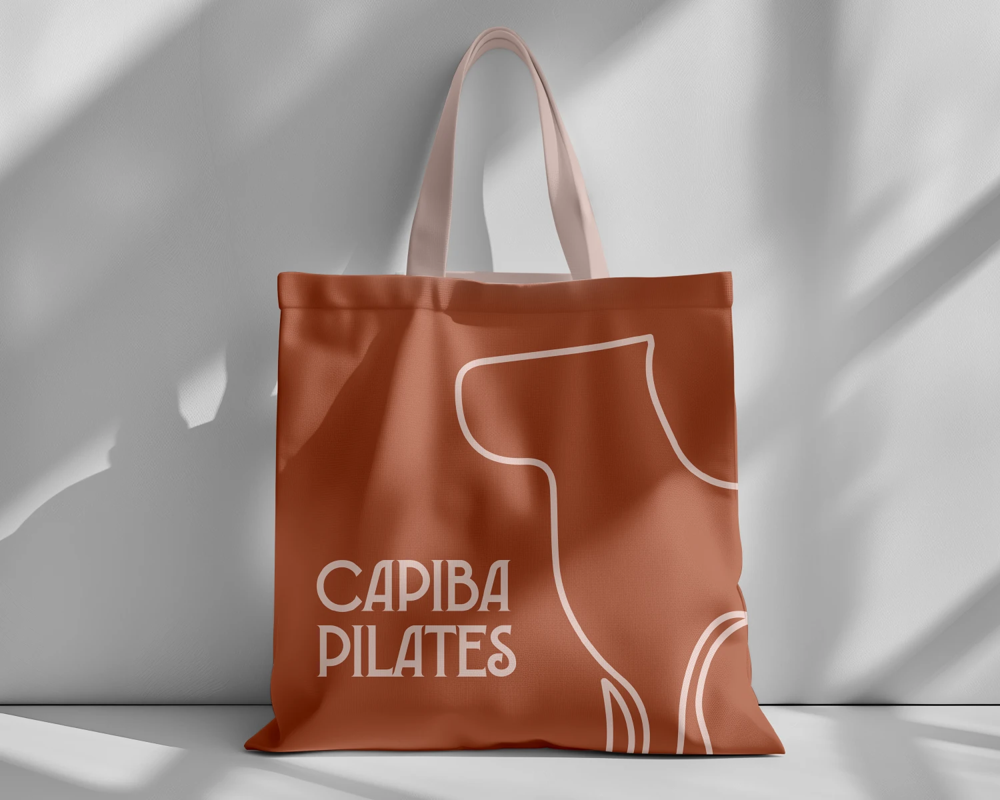
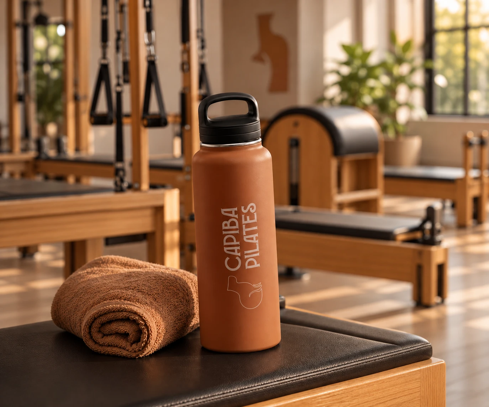
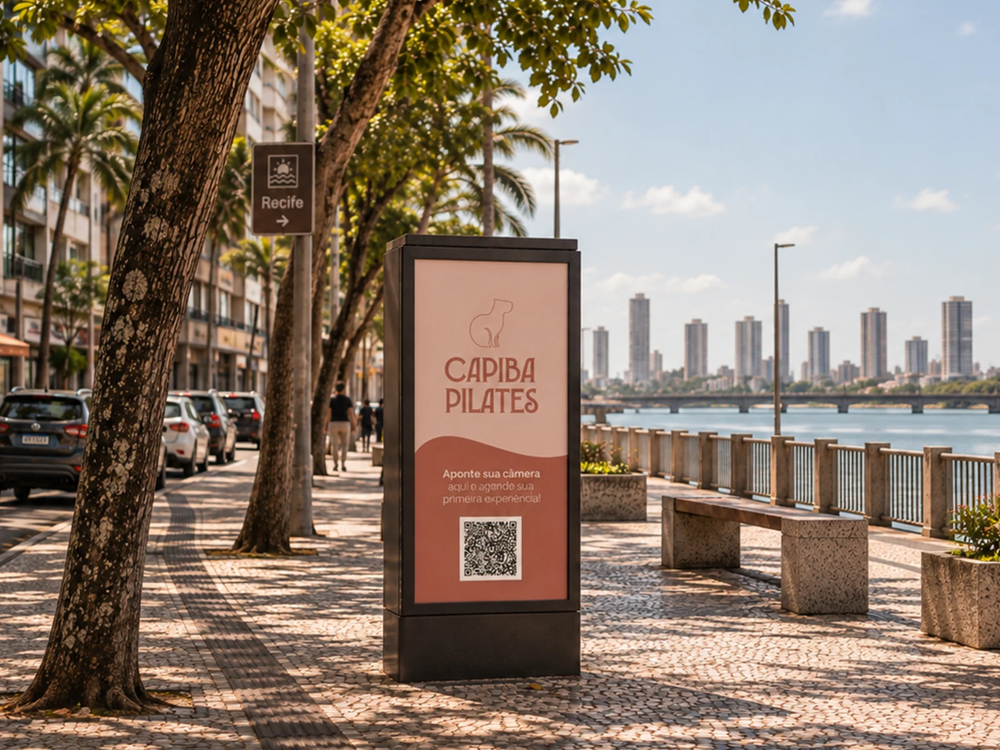
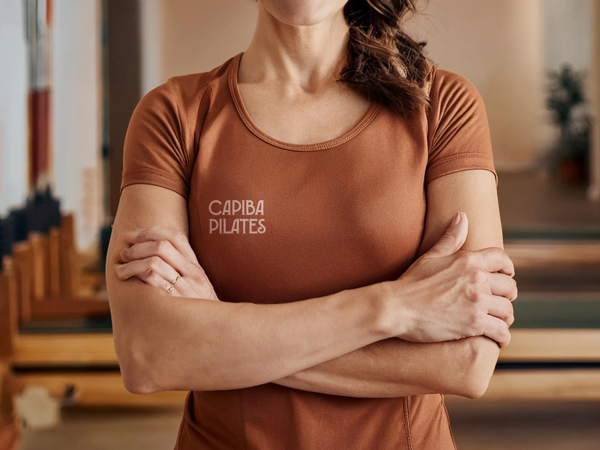
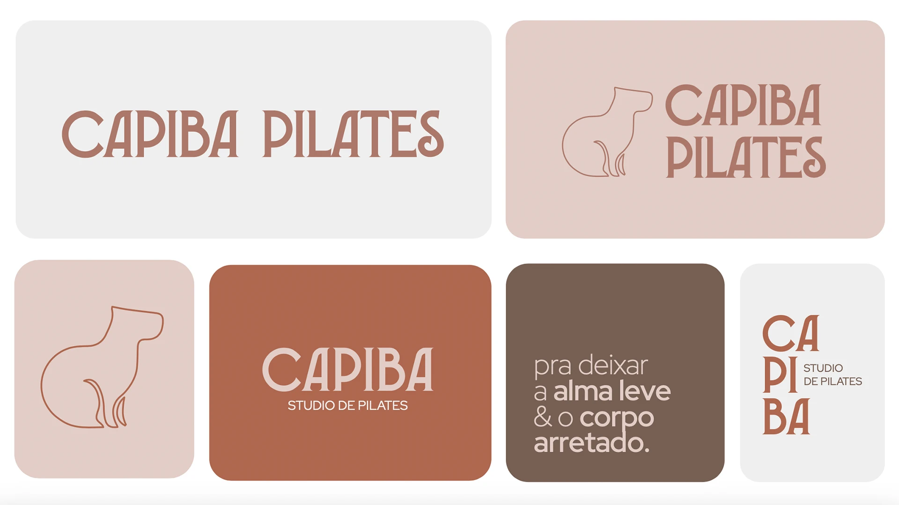
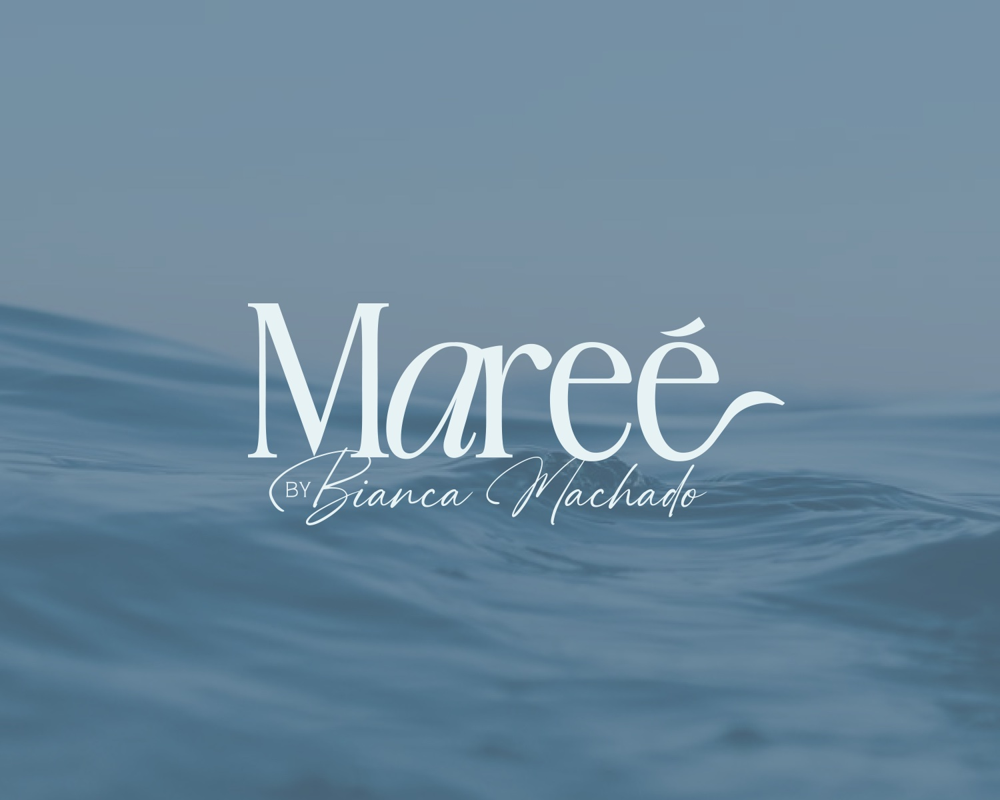

Contexto
Sobre a marca
O Capiba Pilates é um estúdio recifense que nasceu com a proposta de transformar o Pilates em uma experiência de cuidado, movimento e conexão. Mais do que promover saúde e qualidade de vida, a marca buscava criar um espaço acolhedor e próximo, capaz de unir autoridade profissional a uma relação genuína com o território, a cultura e as raízes do Recife.
O desafio
O que a marca precisava comunicar
O desafio era construir uma identidade que fugisse dos códigos visuais genéricos do segmento de saúde e bem-estar, sem perder leveza e credibilidade. A estratégia partiu da própria origem do Capiba: o Rio Capibaribe, o mangue e a cultura recifense. Essas referências foram traduzidas de forma sutil em cores terrosas, formas orgânicas, elementos de inspiração regional e uma capivara minimalista, criando uma marca com personalidade, pertencimento e reconhecimento.
Mockups e aplicações




Próximo projeto
Mareé
Moda · Identidade visual

O próximo capítulo começa aqui